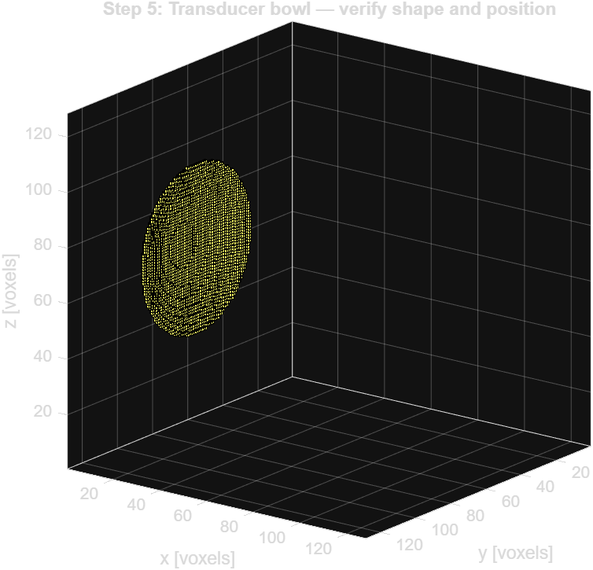

First 3D simulation in water
You already know the 4 structs cold. Now you add one axis. That's it. Everything else — the logic, the CFL rule, the sensor recording — is identical to Level 2. This page shows you exactly what changes and why.
| Property | 2D (Level 2) | 3D (this level) |
|---|---|---|
| kWaveGrid | kWaveGrid(Nx,dx, Ny,dy) | kWaveGrid(Nx,dx, Ny,dy, Nz,dz) |
| medium | Nx×Ny matrix | Nx×Ny×Nz matrix |
| source.p_mask | Nx×Ny binary | Nx×Ny×Nz binary |
| sensor.mask | Nx×Ny binary | Nx×Ny×Nz binary |
| makeTime CFL | 0.3 (same rule) | 0.3 (same rule) |
2
3
4
5
6
7
8
9
10
11
12
kWaveGrid(Nx,dx,Ny,dy) — 4 arguments. Here you add one more pair: Nz,dz. k-Wave detects the number of argument pairs and runs the 3D solver automatically. That's it.makeTime(c, 0.3) sets dt so that sound travels at most 30% of one grid cell per time step. In 3D, always pass c_max — if you add skull later, pass 2900, not 1500.makeArc draws a curved line — which represents an infinite cylindrical source extruded into the z-direction. In 3D, you want an actual spherical cap (bowl). makeBowl gives you the real thing.
2
3
4
5
6
7
8
9
10
11
12
13
14
15
bowl_pos is the grid-index location of the centre of the back face of the transducer — where the cable plugs in. x=1 means it sits at the very edge of the grid. y and z are centred. All three values are grid indices (integers), not physical metres.makeBowl which direction the bowl faces — it sets the geometry of the spherical cap. In water, the focus will land here. Once you add skull (Level 4), refraction shifts the actual focal spot away from this point. Never move bowl_pos to fix a shifted focus.round(50e-3/dx) gives an even number, add 1 to make it odd. k-Wave requires an odd diameter so the bowl has a well-defined central axis grid point. Check: if mod(diameter,2)==0; diameter=diameter+1; endmakeArc([Nx,Ny], arc_pos, radius, diameter, focus_pos) — same argument pattern, just bowl instead of arc.2
3
4
5
6
7
8
9
10
11
(:, :, Nz/2+1) selects every x and y position at a fixed z. This records a 2D axial slice through the centre of the grid. After the simulation you have Nx×Ny sensor points — one time series each. Perfect for visualising the beam profile.'p_max_all' — peak pressure at each sensor point over all time steps. Great for focal mapping. 'p_final' — pressure at the last time step at every grid point (needs full grid sensor or use it with your slice). Use p_max_all for FWHM measurement.p_max_all is returned as a full Nx×Ny×Nz 3D matrix rather than a flat vector. Indexing with (:,:,Nz/2+1) extracts one z-slice but leaves a trailing size-1 dimension — the result is 128×128×1. squeeze() removes that singleton dimension giving a clean 128×128 matrix that imagesc can display. Note: if you see a
reshape() error, this is the fix — check the actual size of p_max_all with disp(size(sensor_data.p_max_all)) first.kgrid.y_vec and kgrid.x_vec are physical position vectors in metres. Multiply by 1e3 to get mm. Now your axes show real distance, not grid indices. Always label axes — an interviewer will notice missing units.2
3
4
5
6
7
8
9
10
'single' uses 32-bit floats instead of 64-bit doubles — halving memory. Accuracy is unaffected because the PML limits simulation accuracy to ~10⁻⁵ anyway. For GPU: use 'gpuArray-single' instead (then call gather() on the output).'off' to skip visualisation (faster). Useful for checking the transducer is placed correctly before committing to a long run.kspaceFirstOrder2D — that's intentional by the k-Wave designers.'DataCast','gpuArray-single', sensor_data stays on the GPU as a gpuArray. You can't index it normally. Either call gather(sensor_data.p_max_all) to pull it back, or add 'DataRecast',true as an input argument to let k-Wave gather it automatically.| Function | What it shows | When to use |
|---|---|---|
| flyThrough | Animates z-slices of 3D volume one by one | Quick overview of the full 3D field |
| voxelPlot | 3D voxel rendering of binary masks | Check source and sensor geometry before running |
| imagesc + squeeze | One 2D slice with colour scale | Quantitative analysis, FWHM, focal map |
2
3
4
5
6
7
8
9
10
11
12
voxelPlot to confirm the bowl is in the right position and facing the right direction. A bowl placed at the wrong location or facing backwards is a common mistake. Costs 1 second to check, saves hours.p_final is the pressure at the last time step at EVERY grid point — it requires sensor.mask = ones(Nx,Ny,Nz) or the 'p_final' record mode. flyThrough then steps through z-slices. Use this for a quick visual check; use imagesc for measurements.sensor_data.p_final(:,:,Nz/2) selects one z-slice but returns an Nx×Ny×1 matrix (still 3D). squeeze() removes the size-1 dimension, giving you an Nx×Ny 2D matrix that imagesc can display. Without squeeze, imagesc shows a grey image.
If yours looks different
Bowl not visible: voxelPlot requires the source mask to have at least one active voxel — check makeBowl arguments.
Bowl touching the grid edge: diameter is too large for your grid size, reduce it.
Bowl in the wrong position: check bowl_pos coordinates — bowl_x = pml_size + 2 sits just clear of the PML on the left wall, Ny/2+1 and Nz/2+1 mean centred in the other two directions.
2
3
4
5
6
7
8
9
10
11
12
13
14
15
16
17
18
19
20
21
22
23
24
25
26
27
28
29
30
31
32
33
34
35
36
37
38
39
40
41
42
43
44
45
46
47
48
49
50
51
52
53
54
55
56
57
58
59
60
61
62
63
64
65
66
67
68
69
70
71
72
73
74
75
76
77
78
79
80
81
82
83
84
85
86
87
88
89
90
91
92
93
94
95
96
If yours looks different
Vertical stripes across the whole image: t_end is too long and the wave has bounced back — reduce t_end.
Empty or all blue: simulation ran but no pressure recorded — check sensor.mask is set correctly.
Focus label in wrong position: the white cross marks the true peak, which may differ slightly from focus_pos due to grid discretisation — this is normal.
Axes show much larger values than expected: PMLInside was set to false and the grid expanded — remove that line.
| Aspect | This simulation | Real lab (BRIC / PRESTUS) |
|---|---|---|
| Grid | 128³, 64mm cube, ~1 min runtime | 256³, 128mm cube, 1–4 hrs |
| Medium | Uniform water, scalar values | CT-derived skull + brain — 3 matrices of Nx×Ny×Nz each |
| Source | makeBowl (on-grid, staircasing) | kWaveArray (off-grid, Wise 2019, no staircasing error) |
| Signal | toneBurst, scaled to 60 kPa source amplitude | createCWSignals, calibrated Pa from transducer datasheet |
| Output | Pressure in Pa, MATLAB workspace | NIfTI file in patient MRI space, loaded in 3D Slicer |